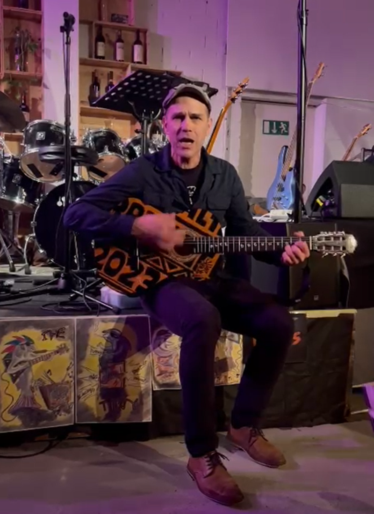
Rolf
Guitar · Harmonica · Voice
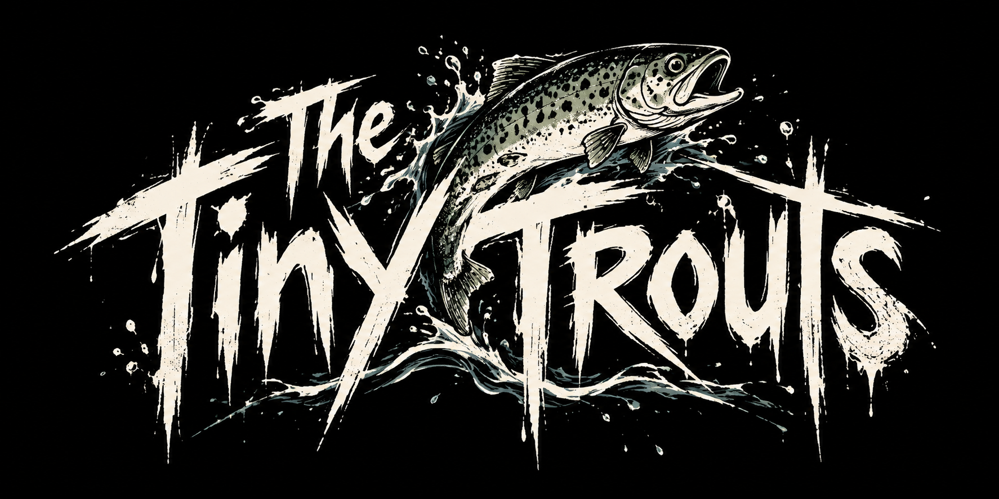
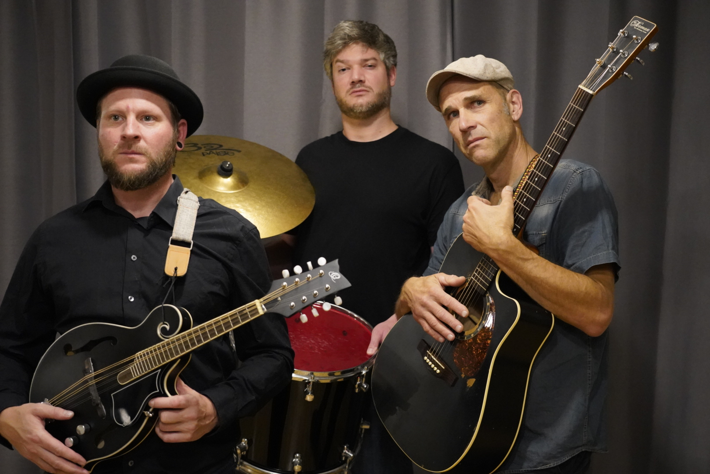
Mal akustisch, mal verstärkt. Eigene Songs und Covers – uf Englisch und Schwiizerdütsch. Dazu Gypsy-Sounds und entspannte Tunes. Was gerade passt, kommt auf die Bühne.
Und je nach Konzert kommen noch befreundete Musiker dazu.
The Tiny Trouts bewegen sich irgendwo zwischen Folk, Rock und Blues. Mal mit akustischen Instrumenten, mal mit Strom. Mal groovig, mal verspielt, mal ganz entspannt.
Wir spielen eigene Songs und Covers, singen auf Englisch und Schweizerdeutsch und lassen uns musikalisch gerne überraschen. Eine Schublade? Haben wir gerade keine zur Hand.

Guitar · Harmonica · Voice
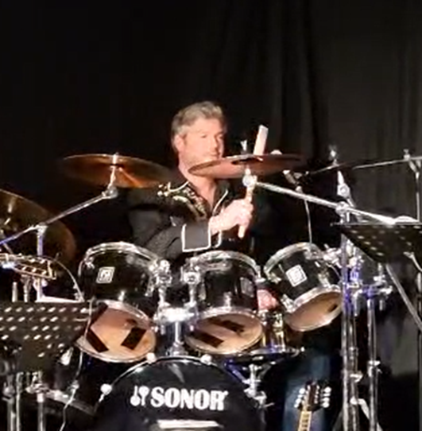
Drums
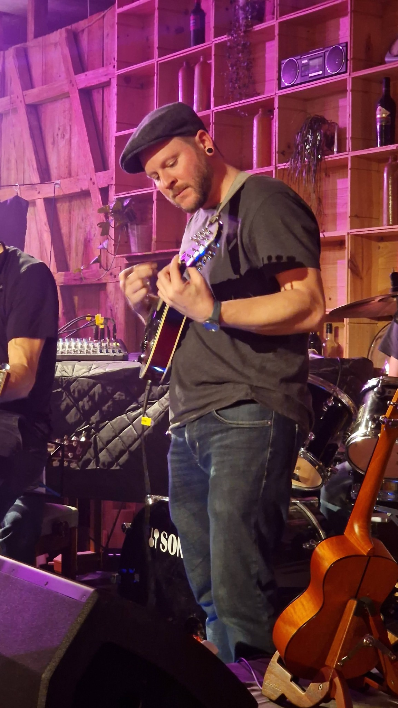
Bass · Guitar · Banjo · Mandolin · Flute · Backing Voice
Einige kurze Einblicke in unterschiedliche Auftritte. Weitere Songs und Konzertdaten folgen.
Live – Clip 01
Live – Clip 02
Live – Clip 03
Live – Clip 04
Der Auftritt vom Samstag, 7. November 2026, in der Alten Brennerei in Mettmenstetten ist abgesagt.
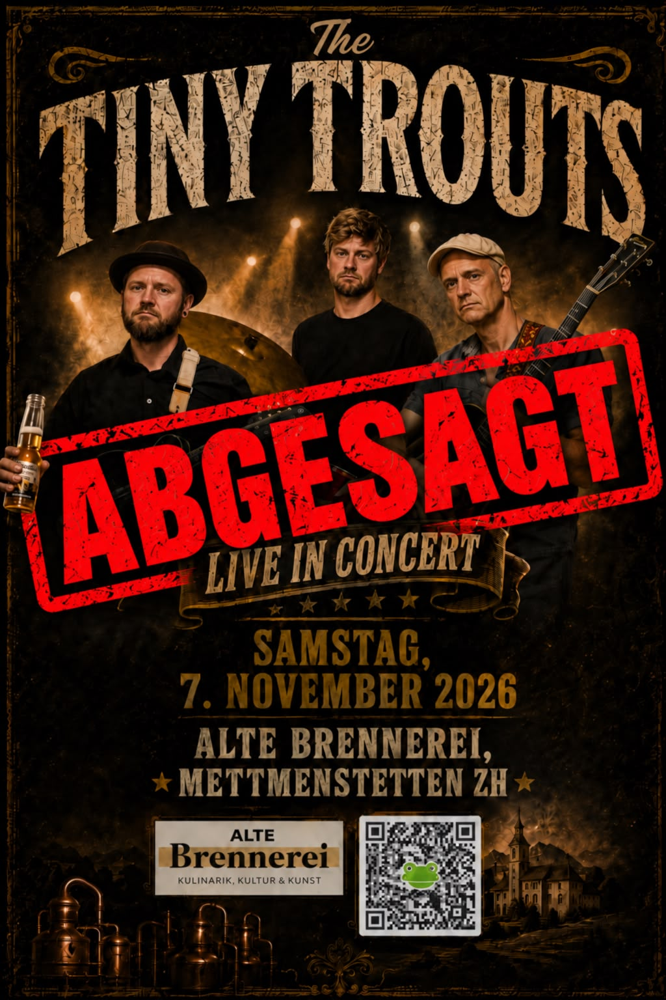
Probe, Aufbau, Pause und alles, was sonst noch dazugehört.
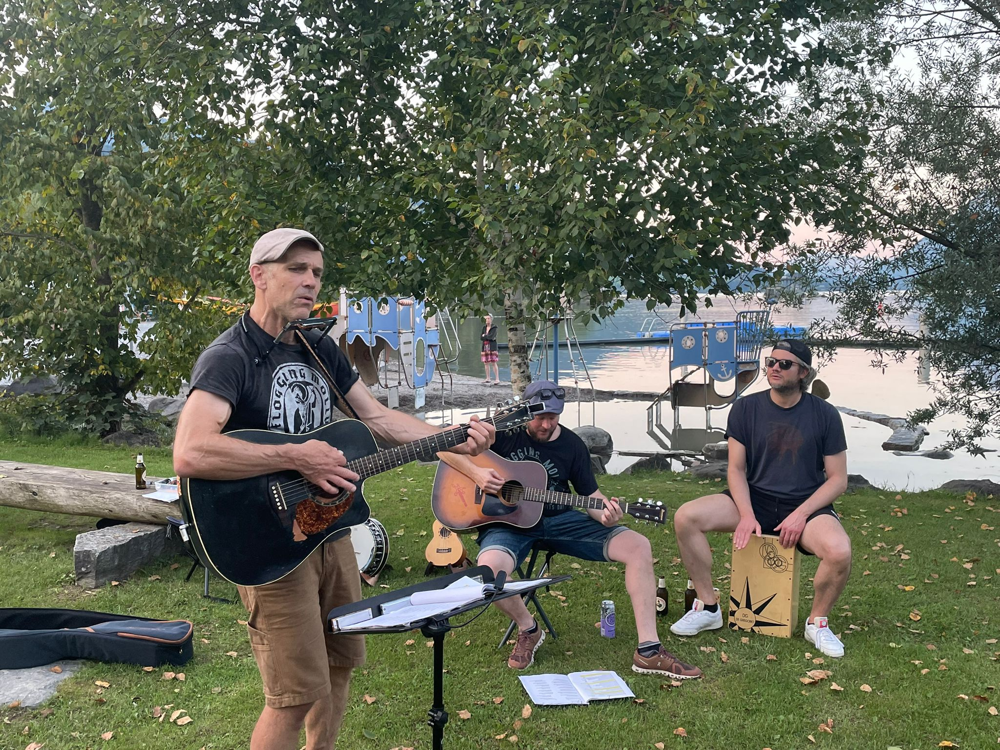
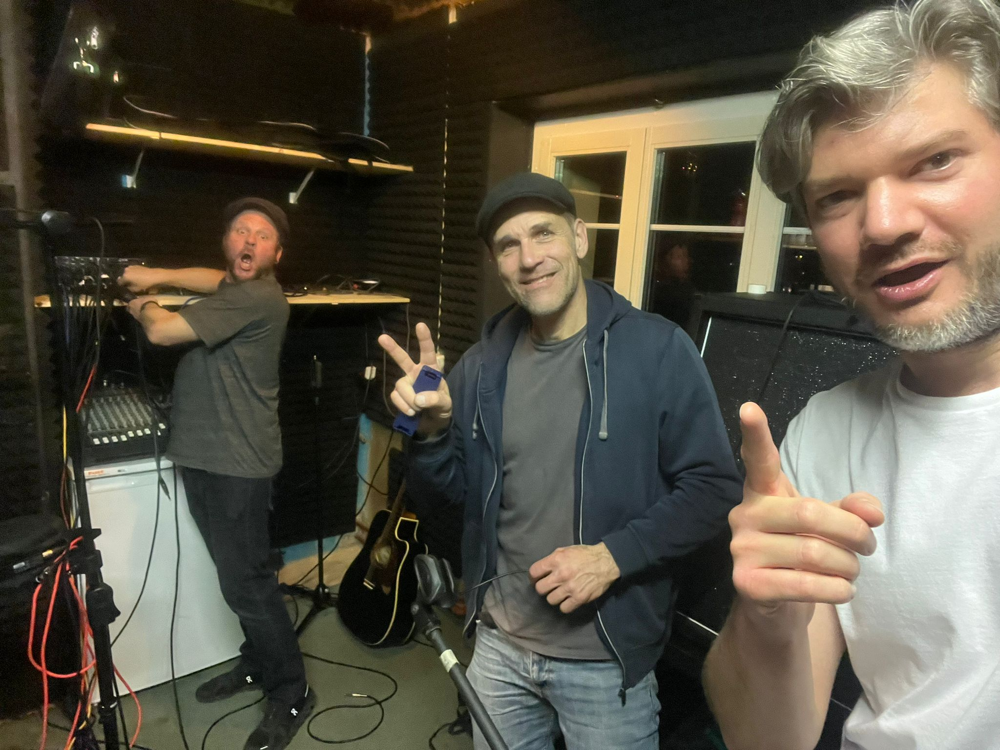
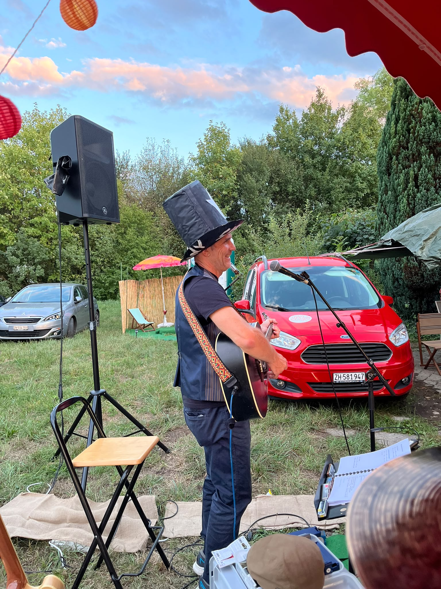
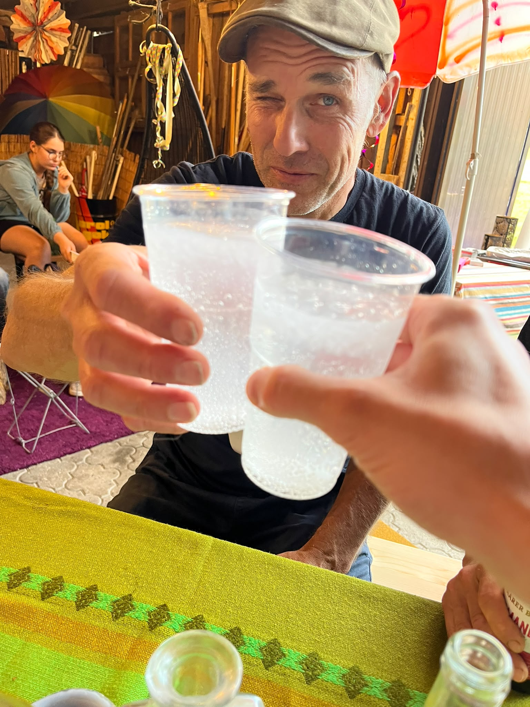
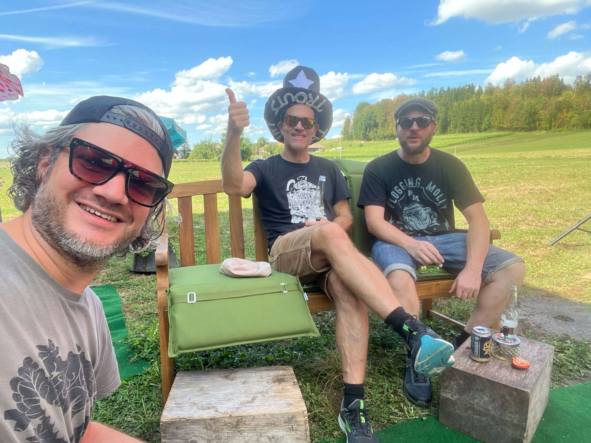
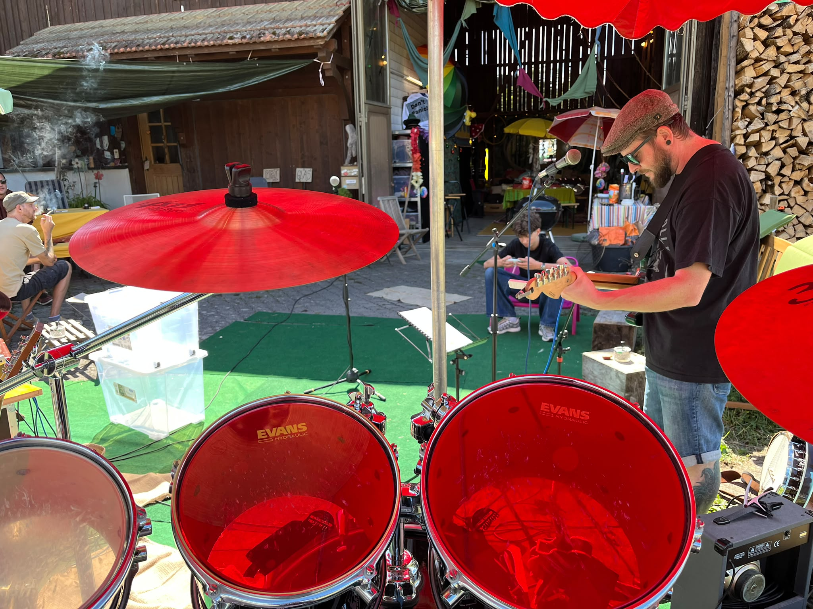
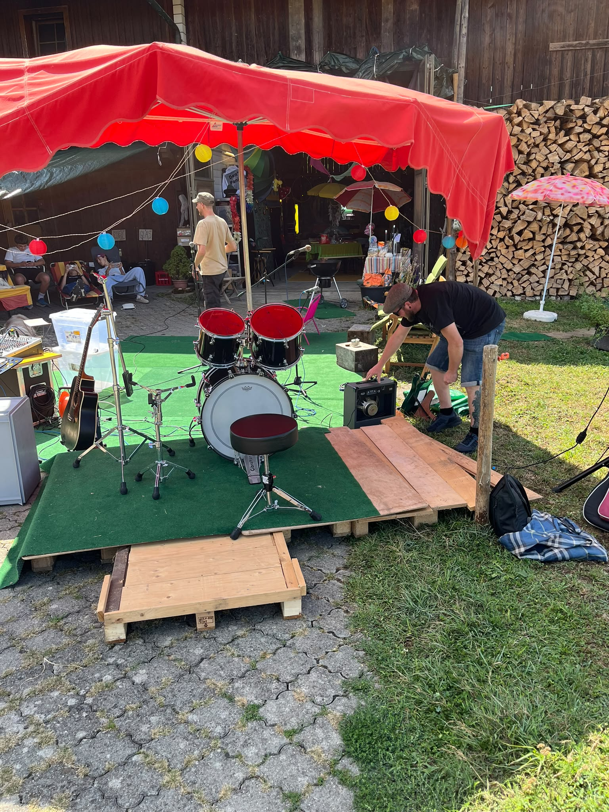
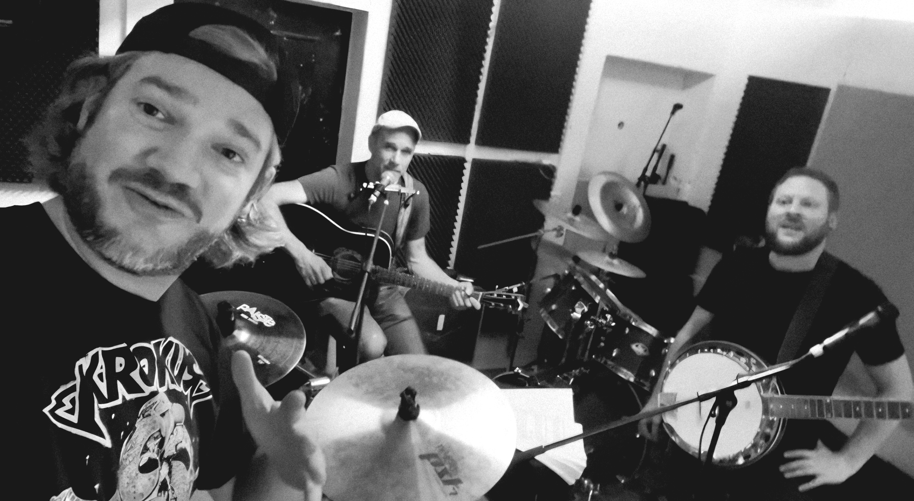
Du planst einen Anlass und suchst Live-Musik mit Folk, Blues und Rock? Schreib uns – wir freuen uns, von dir zu hören.
Instagram & Facebook – Links folgen.